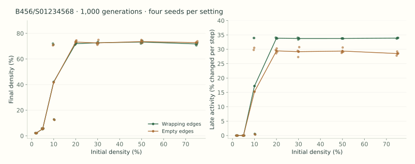
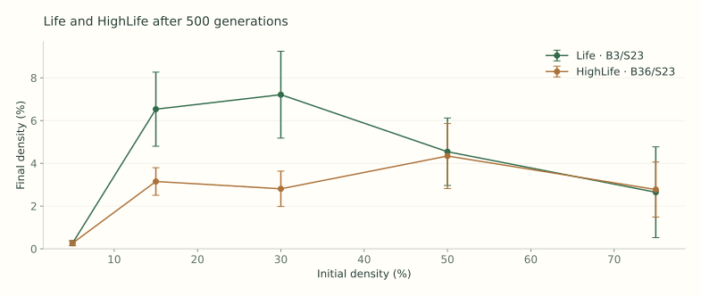
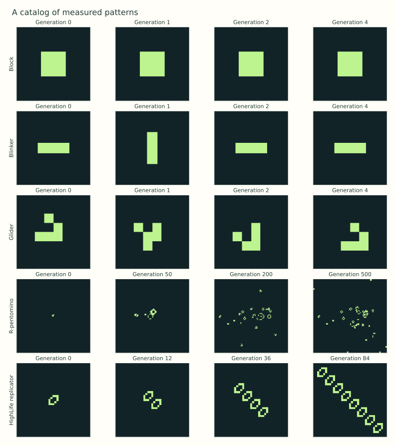
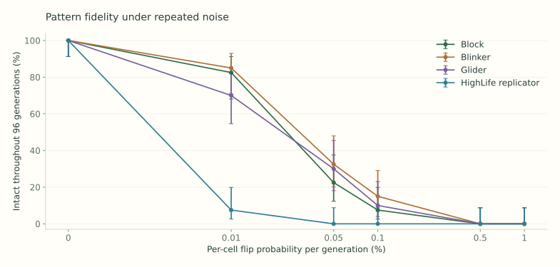

02 / THE EXPERIMENTS
A landscape of possible worlds.
Measured runs. Saved seeds. Open questions.
Every result has a starting point you can revisit.
EXPERIMENT 01
Sample the rule space.
100 distinct rules, drawn uniformly from 262,144 possibilities. Each runs on a 48 × 48 wrapping grid for 300 generations, with three starting densities and two seeds: 600 runs in total.
Counts describe runs, not entire rules. Fixed and periodic outcomes require an exact repeated grid. Active means no repeat was found and at least 2% of cells changed per step in the last 60 generations. It does not establish chaos, mobility, or replication.
| # | Rule | Outcomes in 6 starts | Final density | Late activity | Explore |
|---|
Reading the saved survey...
Run a fresh 100-rule survey in your browser
The same six starting configurations are tested for each rule. Work runs in a background worker; you can cancel without losing the displayed results. The figures below use the saved experiments.
EXPERIMENT 02
One rule. Very different futures.
The sparse starts in the survey froze; denser starts kept changing. A closer look tests 56 new starts on larger grids for 1,000 generations, including both wrapping and empty boundaries.

Survival includes 0, so isolated cells can persist. Birth requires 4, 5, or 6 neighbors. Sparse worlds can become fixed; denser neighborhoods can sustain ongoing changes. This is a mechanism to investigate, not a proven phase transition.
EXPERIMENT 03
Life, with one extra birth condition.
Conway's Life uses B3/S23. HighLife adds birth at six neighbors: B36/S23. The comparison uses five densities, five matched seeds, 64 × 64 wrapping worlds, and 500 steps.


EXPERIMENT 04 / OPTION B
What survives a disturbance?
After each deterministic update, every cell independently flips with probability p. Four patterns, six noise rates, and 40 seeds per setting: 960 runs of 96 generations on 64 × 64 worlds.

| Pattern | Flip probability | Intact through 96 steps | Matches at step 96 | Try it |
|---|
The replicator grows and exposes more cells to disturbances. Its strict whole-pattern fidelity is harder to preserve than a small still life. Loss of exact agreement is not proof that every recognizable copy has disappeared.
The downloadable data also include 324 noisy random-world runs for Life, HighLife, and the selected rule, measuring final divergence from a matched noise-free baseline.